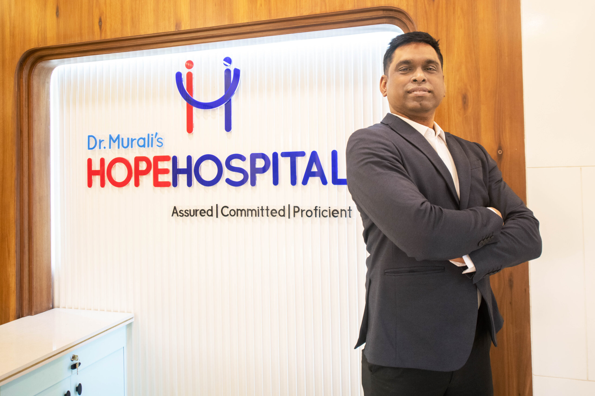

Orthopedics — Joint Replacement Specialists in Nagpur
Led by Dr. B.K. Murali, the best orthopedic surgeon in Nagpur, our department delivers world-class bone and joint care with advanced surgical techniques and compassionate treatment.
Procedures: Knee Replacement Surgery · Hip Replacement Surgery
About Our Orthopedics Department in Nagpur
The Orthopedics Department at NABH-accredited Hope Hospital is Central India's leading center for bone, joint, and musculoskeletal care in Nagpur. With a dedicated team of specialist orthopedic surgeons, physiotherapists, and rehabilitation doctors, we provide comprehensive treatment for conditions ranging from simple fractures to complex joint replacements and spine surgeries.
Our specialist medical department is equipped with state-of-the-art modular operation theaters, C-arm flat panel imaging, and advanced arthroscopic instruments that enable minimally invasive surgery with faster recovery times. We have successfully treated thousands of patients from Nagpur, Vidarbha, and across Central India, earning recognition as the preferred orthopedic hospital in the region.
Hope Hospital's orthopedic unit follows evidence-based treatment protocols with a strong emphasis on patient safety and outcomes. Every surgical plan is personalized based on the patient's age, activity level, bone quality, and overall health goals, ensuring the best possible results for each individual.
Meet Our Specialist

Dr. B.K. Murali
M.S. (Ortho) | Joint Replacement Surgeon | 19+ Years Experience
Dr. B.K. Murali is one of the most trusted and experienced orthopedic surgeons in Nagpur and Central India. A specialist in total knee replacement, total hip replacement, spine surgery, and arthroscopy, Dr. Murali has performed thousands of successful surgeries over his career spanning more than 19 years.
He is a recipient of the Lokmat Visionary & Innovator Healthcare Award and a finalist in India's Innovation Growth Programme. His approach combines surgical precision with compassionate patient care, ensuring every patient receives individualized attention throughout their treatment journey.
Our Orthopedic Medical Services
Total Knee Replacement
Advanced total and partial knee replacement surgery using high-quality implants, computer-assisted navigation, and minimally invasive techniques for faster recovery and longer-lasting results. Ideal for patients with severe arthritis or knee degeneration.
Total Hip Replacement
Comprehensive hip replacement procedures including total hip arthroplasty, bipolar hemiarthroplasty, and revision hip surgery. We use anterior and posterior approaches based on individual patient needs for optimal outcomes and mobility restoration.
Arthroscopy Surgery
Minimally invasive arthroscopic procedures for knee, shoulder, ankle, and elbow joints. Used for ligament repairs (ACL/PCL), meniscus surgery, rotator cuff repair, and diagnostic evaluation with smaller incisions and quicker rehabilitation.
Spine Surgery
Advanced spinal procedures including disc replacement, spinal fusion, laminectomy, vertebroplasty, and treatment for scoliosis, spinal stenosis, and herniated discs. Our surgeons use microscope-assisted and minimally invasive spine techniques.
Sports Medicine
Specialized treatment for sports-related injuries including ligament tears, tendon injuries, stress fractures, and overuse injuries. Our program includes injury prevention counseling, performance enhancement, and structured return-to-sport rehabilitation.
Trauma Care & Fracture Management
Round-the-clock emergency orthopedic trauma services for fractures, dislocations, and polytrauma cases. We handle complex fracture fixation using intramedullary nails, plates, external fixators, and Ilizarov techniques with dedicated 24/7 availability.
Why Choose Hope Hospital for Orthopedic Care?
Choosing the right hospital for orthopedic surgery is a critical decision that affects your recovery, mobility, and quality of life. Here is why thousands of patients across Central India trust Hope Hospital for their bone and joint care:
- Expert Surgeon: Dr. B.K. Murali brings 19+ years of specialized orthopedic experience and thousands of successful surgeries.
- Modern Infrastructure: 3 modular operation theaters, C-arm flat panel, arthroscopic equipment, and a dedicated physiotherapy unit.
- Government Scheme Coverage: Empaneled under Ayushman Bharat, MJPJAY, CGHS, ECHS, and 20+ schemes for free or cashless surgery.
- Comprehensive Rehabilitation: In-house physiotherapy department for structured post-surgical recovery programs.
- 200+ Bed Facility: Including 30 ICU beds for post-operative monitoring and critical care support.
- Patient-First Approach: Personalized treatment plans, transparent pricing, and dedicated post-operative follow-up care.
Frequently Asked Questions
Who is the best orthopedic surgeon in Nagpur for knee replacement?
Dr. B.K. Murali at Hope Hospital is widely recognized as the best orthopedic surgeon in Nagpur for knee replacement surgery. With over 19 years of experience and an M.S. (Ortho) qualification, he has performed thousands of successful total knee replacement and total hip replacement surgeries using the latest techniques including computer-navigated and minimally invasive approaches. He has received the Lokmat Visionary & Innovator Healthcare Award for his contributions to orthopedic care.
What is the cost of knee replacement surgery at Hope Hospital Nagpur?
The cost of knee replacement surgery at Hope Hospital Nagpur varies depending on the type of implant and procedure chosen. Hope Hospital is empaneled under 20+ government health schemes including Ayushman Bharat (PM-JAY), MJPJAY, CGHS, and ECHS, which means eligible patients can receive knee replacement surgery completely free of cost. For self-pay patients, our team provides transparent pricing and flexible payment options. Contact us at 0712-2980073 / +91-9823555053 for a detailed cost estimate.
How long is the recovery time after joint replacement surgery?
Recovery after joint replacement surgery at Hope Hospital typically involves a 4-5 day hospital stay, followed by 6-8 weeks of guided rehabilitation. Most patients begin walking with support within 24-48 hours after surgery. Our dedicated physiotherapy department creates personalized recovery plans for each patient. Full recovery with return to normal activities usually takes 3-6 months, depending on the patient's overall health, the type of joint replaced, and adherence to the rehabilitation program.